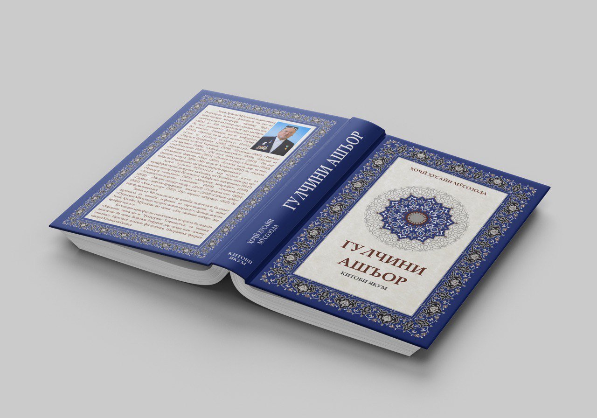
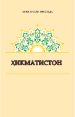

Ҳоҷӣ Ҳусайн Мӯсозода — ходими дин, адабиётшинос, шоир ва ходими ҷамъиятӣ. Муаллифи беш аз 20 китоби насрӣ ва 14 девони ашъори ирфонӣ, ахлоқӣ ва иҷтимоӣ. Номзади илми филология (2004), дорандаи мукофотҳои давлатӣ ва байналмилалӣ.
Ҳоҷӣ Ҳусайн Мӯсозода 10 июни соли 1955 дар деҳаи Ростровути ноҳияи Ғончии Ҷумҳурии Тоҷикистон (ҳоло ноҳияи Деваштич) ба дунё омадааст. Соли 1973 пас аз хатми мактаби миёна ба мадрасаи «Мири Араб»-и шаҳри Бухоро дохил шуда, онро соли 1978 бо муваффақият хатм намуд. Солҳои 1978-1990 сархатиби масҷиди ҷомеи «Ғулакандоз»-и ноҳияи Ҷаббор Расулов фаъолият кард. Солҳои 1990-1992 дар Донишгоҳи байналмилалии Ҷумҳурии Сотсиалистии Либиё таҳсил намуда, бо имтёзи махсус дар соҳаи илм сарфароз гашта аст. Аз соли 1993 сархатиби масоҷиди вилояти Ленинобод, ноиби муфтии Ҷумҳурии Тоҷикистон таъин шуд. Аз соли 1994 сархатиби масҷиди ҷомеи Шайх Маслиҳатдин дар шаҳри Хуҷанд ва ҳамзамон, сархатиби вилоят ва ноиби муфтии мусалмонони Тоҷикистон буд. Аз соли 1997 раиси Шӯрои уламои дини вилояти Суғд, сархатиби масҷиди ҷомеи марказии Шайх Маслиҳатдин ва муовини раиси Шӯрои уламои дини Ҷумҳурии Тоҷикистон интихоб гардид.
Мукофотҳо
Медали давлатии «Хизмати шоиста» Ҷумҳурии Тоҷикистон (2012), Ордени байналмилалии «Интеллект нации» (2009), Ҷоизаи ба номи Бобоҷон Ғафуров (вилояти Суғд) (2017), Шаҳрванди фахрии шаҳри Хуҷанд (2020).
Сафарҳои байналмилалӣ
Ӯ ба зиёда аз 25 кишвари Шарқ ва Ғарб, аз ҷумла Арабистони Саудӣ, Эрон, Кувайт, Урдун, Туркия, Миср, Ливия, Алҷазоир, Фаластин, Кипр, Италия, Алҷазоир, Нигер, Фаластин, Аморот, Мавритания, Нигер, Нигерия, Малайзия, Уганда, Мали, Сенегал ва давлатҳои собиқ Шуравӣ сафарҳои хидматӣ анҷом дода, Тоҷикистонро дар арсаи байналмилалӣ ҳамчун давлати демократӣ, ҳуқуқбунёд муаррифӣ намудааст.
Зиндагинома
Аз эҷодиёти Устод
Фаъолияти илмӣ
Китобҳо
Девонҳои ашъор ва китобҳои гулчин
1. Мифтоҳи асрорнома - девони якӯм (2017-2024)
2. Ҷавҳари ҷовидона - девони дуввум (2018-2024)
3. Меъроҷи маърифат - девони саввӯм (2018-2024)
4. Тоҷикистон – вориси Сомониён - девони чаҳорӯм (2018-2023)
5. Ҳикматистон девори панҷум (2018)
6. Роғун – нури зиндагӣ(гулчин) (2018)
7. Меҳри падару модар (гулчин) (2019)
8. Тоҷикистон – вориси Сомониён (нашри дуввуми такмилёфта) (2020)
9. Саразм - мероси миллат (гулчин) (2020)
10. Гулшанистон - девони шашӯм (2020-2024)
11. Сабъаи сайёр - девони-ҳафтӯм (2021)
12. Ҳашт ахтар - девони ҳаштум (2021)
13. Нӯҳ авроқи забарҷад - девони нуҳӯм (2022)
14. Даҳ чашмаи анбар - девони даҳӯм (2022)
15. Гулчини ашъор (дар ду китоб) (2022)
16. Файзи нури иҷлосияи XVI (гулчин) (2022)
17. Ёздаҳ ситораи дурахшон - девони ёздаҳӯм (2023)
18. Дувоздаҳ бурҷи фалак - девони дувоздаҳӯм (2025)
19. Сездаҳ нишонаи роз - девони сездаҳӯм (2025)
20. Чаҳордаҳ водии саодат - девони чаҳордаҳӯм (дар арафаи чоп)
Зиёда аз 400 ғазали Ҳоҷӣ Ҳусайн Мӯсозода аз ҷониби оҳангсозон ба оҳанг дароварда шудаанд ва байни ҳофизону сарояндагон бо номи «Сурудҳои Мӯсозода» машҳур гаштаанд. Сурудҳо дар матни шеърҳои Ҳоҷӣ Ҳусайн Мӯсозода дар чорабиниҳои оммавии сиёсӣ, адабӣ ва фарҳангӣ, дар маҳфилҳои гуногун иҷро карда шуда, боиси болидагии табъи мардум мегарданд.
Шеъру ғазалҳо
КИШВАРИ НУРУ САОДАТ, ТОҶИКИСТОН, ЗИНДА БОД! (2411)
Пешвои боадолат, зеби даврон, зинда бод!
Ин ҳама ободиҳо аз баҳри халқу миллат аст,
Тоҷикистон, доимо бо нури Раҳмон, зинда бод!
Нури истиқлоли давлат ваҳдати миллат бувад,
Дар садоқат бар Ватан Вахшу Бадахшон, зинда бод!
Ваҳдати мо гул кунад аз рамзи Кӯлобу Ҳисор,
Дар табиат гулшану Рашту Зарафшон, зинда бод!
Гардад обод ин Ватан - рушди саноат дар назар,
Дар муҳаббат ҳам рафоқат Суғду Хатлон, зинда бод!
Асли давлатдории мо давлати Сомониён,
Ифтихори миллати, мо даври Сомон, зинда бод!
24.02.2021
АДЛИ ПЕШВОИ ЗАМОН ШУКРОНАИ ДАВРОНИ МО (2747)
Шукри шоҳи додгар Эмомалӣ Раҳмони мо.
Шукри истиқлоли давлат, Парчами миллат баланд,
Ифтихори миллату Исмоили Сомони мо.
Шукри оромии миллат, адли Сарвар дар назар,
Дар масири зиндагӣ шукронаи Раҳмони мо.
Худ навозишҳо кунад аз баҳри муҳтоҷу ятим,
Шукри раҳми Пешво, шукронаи даврони мо.
Марзу буми Тоҷикистон, Рамзи давлат ҳам Нишон,
Хоки поки Тоҷикистон сурмаи чашмони мо.
Шукри халқи Тоҷикистон, шукри хоки ин Ватан,
Шукри адли Пешво Эмомалӣ Раҳмони мо.
14.02.2022
ТИНАТИ ГУЛҲОИ РАНГИН ДАР ГУЛОБ АФТОДААСТ (1865)
Раҳмати дилҳои сангин бениқоб афтодааст.
Мушку анбар гар ту дидӣ дар гулобе ё ниқоб,
Қимати гулҳои мушкин беҳисоб афтодааст.
Боданӯшӣ, бангу афюн сад ҷунун орад ба ту,
Иллати ин номи нангин дар шароб афтодааст.
Лаззати об ар бидонӣ, шӯру талхӣ рамзи баҳр,
Қисмати дарёи ширин аз саҳоб афтодааст.
Бо шаҳомат чуғзу лочин дӯрӣ ҷӯяд худ ба худ,
Ғафлати авлоди Одам чун сароб афтодааст.
Номаи девон чу омад нақши дунёро бубин,
Давлати дунёи рангин дар китоб афтодааст.
Вақти оромӣ ба нармӣ ту дуо кун, эй Ҳусайн,
Фурсати наҷвои омин мустаҷоб афтодааст.
08.03.2020
ЭЪЛОМИЯИ ХУҶАНД (3880)
Иди Наврӯз бо бузургон зикри он шуд дилписанд.
Ҷашни Наврӯз қутбнамоу Тоҷикистон муқтадо,
Пешвои миллати мо бо садоқат раҳнамо.
Раҳбари қирғизу узбек Содиру ҳам Мирзиё,
Миизбон олимақом Эмомалӣ Раҳмони мо.
Сулҳу дӯсти байни се халқ муҷдаҳо бар мо расид,
Ҷовидон Эъломия бар мардуми дунё расид.
Дар Хуҷанд Эъломия имзо бишуд дар иттиҳод,
Халқ бигуфто ваҳдати мо бо муҳаббат зинда бод!
Раҳбари се мамлакат болои сар парчам буд,
Шуд муайян бо адолат бе хато хатти ҳудуд.
Баҳри миллат ин санадҳо армуғони бо бақо,
Дар Хуҷанд имзо бикарданд дӯстони бо вафо.
Тоҷику ӯзбеку қирғиз чун бародар дар яқин,
Роҳи дӯстиро бидонад ҳар,ки бошад нек бин.
Қалъаи шаҳри Хуҷанд тобанда шуд чун офтоб,
Нури имзо васфи он поянда монад дар китод.
Ҷашни Наврӯз бо сафо машҳӯр гашта дар ҷаҳон,
Дар Хуҷанди бостон Эъломия шуд ҷовидон.
Аҳду паймону садоқат дар миёни дӯстон,
То абад поянда бошад ҳамчу роҳи Каҳкашон.
Ту таманно кун Ҳусайно баҳри мардум иттиҳод,
Рамзи ободӣ расонад халқи моро бар мурод.
17.06.2025 10:13
ПОЭЗИЯИ МӮСОЗОДА ОИДИ ЭЪЛОМИЯИ ХУҶАНД.(3920)
Рӯзи Наврӯзи аҷам бо дӯстони дилписанд.
Тоҷикистон муқтадову, Тоҷикистон раҳнамо
Ин ҳама аз ҳиммату сидқу сафои Пешво.
Раҳбари қирғизу узбек Содиру Шавкат ба ҳам
Миизбон олимақом Эмомалӣ Раҳмони мо.
Се ситора,се муҳаббат, се садоқат се вафо
Баста Аҳди дӯстӣ андар фазои босафо.
Шуд Хуҷанди бостон даргоҳи пурфайзи сабо
Мӯҳри Ваҳдат насб гардид байни се МАрди сахо!
Раҳбари се мамлакат бо парчаму ҳарфи дуруд
Шуд муайян бо адолат бе хато хатти ҳудуд.
Баҳри миллат ин санадҳо армуғони бебаҳост
Армуғони зиндагӣ сарчашмаи меҳру вафост
Тоҷиику ӯзбеку қирғиз чун бародар дар яқин,
Дӯстони бомуруват, қадрдону дурбин
Қалъаи шаҳри Хуҷанд тобанда шуд чун офтоб,
Нури имзо васфи он поянда монад дар китоб.
Ҷашни Наврӯз бо сафо машҳур гашта дар ҷаҳон,
Файзи дигар дошт ин ид дар ҳузури дӯстон
Аҳду паймону садоқат дар миёни дӯстон,
То абад поянда бошад ҳамчу роҳи Каҳкашон.
Орзу бинмо Ҳусайно баҳри мардум иттиҳод,
Дӯстиҳо мерасонад халқи моро бар мурод.
03.08.2025 10:13
ДАР ВАСФИ ҚУРЪОНИ КАРИМ ОСОРИ ПУШКИНРО БИХОН (1057)
Равшан кунад он қалби ту, ҳар гаҳ набошӣ бадгумон.
Чашмаш бидида роҳи ҳақ, аз сураҳо дода сабақ,
Тафсири ҳарфаш дилситон, гар русӣ бошад ҳам забон.
Нуҳ шеъри вай аз сураҳо бо иқтибос аз Фатҳу Нуҳ,
Бар ҳақ ҳидоят медиҳанд онҳо ба ҳар як нотавон.
Оёти Қуръонро навишт ӯ дар гирифторӣ ба худ,
Аз баҳри таскини дилаш ҳақро бикардаст ӯ баён.
Намруди золимро бигуфт ӯ мисли ҳар шоҳи разил,
Ҳар қиссаи Пайғамбаре бо васфи Қуръон ҷовидон.
Дар васфи Қуръони карим ҳарфи Гиёте низ ҳаст,
Осори Пушкин, эй Ҳусайн, ибрат бувад бар дигарон.
30.06.2018.
Таҳлили шеърҳо
КИШВАРИ НУРУ САОДАТ, ТОҶИКИСТОН, ЗИНДА БОД! (2411)
Матни шеър:
Кишвари нуру саодат, Тоҷикистон, зинда бод!
Пешвои боадолат, зеби даврон, зинда бод!
Ин ҳама ободиҳо аз баҳри халқу миллат аст,
Тоҷикистон, доимо бо нури Раҳмон, зинда бод!
Нури истиқлоли давлат ваҳдати миллат бувад,
Дар садоқат бар Ватан Вахшу Бадахшон, зинда бод!
Ваҳдати мо гул кунад аз рамзи Кӯлобу Ҳисор,
Дар табиат гулшану Рашту Зарафшон, зинда бод!
Гардад обод ин Ватан - рушди саноат дар назар,
Дар муҳаббат ҳам рафоқат Суғду Хатлон, зинда бод!
Асли давлатдории мо давлати Сомониён,
Ифтихори миллати, мо даври Сомон, зинда бод!
24.02.2021
Таҳлил:
Шеъри Ҳоҷӣ Ҳусайн Мӯсозода бо номи «Кишвари нуру саодат, Тоҷикистон, зинда бод!» (№2411) як шеъри ватандӯстона ва тараннумгари муҳаббат ба Ватан, Пешво ва арзишҳои истиқлол мебошад. Шарҳу тавзеҳи муфассали ҳар байт:
Байти 1
Кишвари нуру саодат, Тоҷикистон, зинда бод!
Пешвои боадолат, зеби даврон, зинда бод!
Шоир Тоҷикистонро бо ифтихор васф кардааст, ки саршор аз нур (маънавият, маърифат, истиқлол) ва саодат (ободӣ, оромӣ, пешрафт) аст. Ин мазмун аз рӯи ирфон ва идеологияи миллӣ маншаъ мегирад. Дар мисраи дуюм Пешвои миллат яъне Эмомалӣ Раҳмон,ҳамчун инсони боадолат,халқпарвар ва зеби даврон ва замон тасвир шудааст.
Байти 2
Ин ҳама ободиҳо аз баҳри халқу миллат аст,
Тоҷикистон, доимо бо нури Раҳмон, зинда бод!
– Мазмун: Шоир таъкид мекунад, ки тамоми пешравиҳои кишвар ба хотири мардум ва миллат анҷом ёфтаанд, на ба хотири нафари алоҳида. Ва ин ҳама дар зери нури раҳнамоии Раҳмон сурат мегирад — ки ҳам маънии рамзии нур (ҳидоят, илҳом), ва ҳам номи Пешвои миллатро дорад.
Нури Раҳмон – ҳам маънавӣ (нур аз Худо), ҳам шахсӣ (номи Пешво: Эмомалӣ Раҳмон).
Байти 3
Нури истиқлоли давлат ваҳдати миллат бувад,
Дар садоқат бар Ватан Вахшу Бадахшон, зинда бод!
– Мӯсозода истиқлол ва ваҳдатро ҳамчун ду чароғи равшан дар шинохти давлати миллӣ мешиносонад. Ифодаи нури истиқлол бо ваҳдати миллат як воҳиди маънавӣ ва сиёсиро ташкил медиҳад. Мисраи дуюм номи Вахш ва Бадахшон-ро ҳамчун намунаҳои вафодории бар Ватан зикр мекунад,яъне Вахш (ноҳияи дар Хатлон) ва Бадахшон (вилояти Мухтори кӯҳистон) рамзи ягонагии ҷуғрофиёии кишвар мебошанд.
Байти 4
Ваҳдати мо гул кунад аз рамзи Кӯлобу Ҳисор,
Дар табиат гулшану Рашту Зарафшон, зинда бод!
Ифодакунандаи густариши ваҳдат ва субот дар тамоми минтақаҳои кишвар. Кӯлобу Ҳисор рамзи ваҳдати миллӣ буда, бо воҷаи гул иртиботи зебоии зоҳир ва маънавӣ доранд. Дар мисраи дуюм Рашт ва Зарафшон ҳамчун макони зебоӣ ва табиати гулрез тасвир ёфтааст.
Гул (намоди зебоӣ, дӯстӣ ва ваҳдат), табиат (баёни сулҳу оромӣ).
Байти 5
Гардад обод ин Ватан - рушди саноат дар назар,
Дар муҳаббат ҳам рафоқат Суғду Хатлон, зинда бод!
– Шоир ба рушди иқтисодӣ ишора мекунад, махсусан саноат, ки пояи устувори давлатдорист. Бо ҷалби муҳаббат ва дӯстӣ миёни Суғд ва Хатлон ва иттиҳоди онҳо метавон кишварро боз ҳам ободтар сохт.
– Ин байт ҳам равияи иҷтимоӣ дорад ва ҳам иқтисодӣ.
Байти 6
Асли давлатдории мо давлати Сомониён,
Ифтихори миллати мо даври Сомон, зинда бод!
– Дар охир шоир Мӯсозода пояи таърихии давлатдории тоҷиконро ба давраи Сомониён рабт медиҳад. Яъне давлатдории ҳозира идомаи рӯшани анъанаи қадимии миллист ва далели ифтихори миллӣ мебошад.
– Давлати Сомониён барои тоҷикон маънои таҷдиди ҳувият ва нишони аслии давлатдории қадимро дорад.
Хулоса:
Ғазал (ё қасидаи ватандӯстона) бо забони соддаву равон, вале пурмаънӣ ва рамзӣ эҳсоси баланди миллиро тараннум мекунад. Мавзӯъҳои истиқлол, ваҳдат, Пешво, ободӣ, иттиҳоди минтақаҳо ва пайванди таърихӣ бо давлати Сомонӣ хеле ба таври мутаносиб ва ҳамоҳанг баён шудаанд. Он як намунаи шеъри иҷтимоӣ ва ватандӯстӣ дар адабиёти муосири тоҷик мебошад.
АДЛИ ПЕШВОИ ЗАМОН ШУКРОНАИ ДАВРОНИ МО (2747)
Матни шеър:
Адли Пешвои замон шукронаи даврони мо,
Шукри шоҳи додгар Эмомалӣ Раҳмони мо.
Шукри истиқлоли давлат, Парчами миллат баланд,
Ифтихори миллату Исмоили Сомони мо.
Шукри оромии миллат, адли Сарвар дар назар,
Дар масири зиндагӣ шукронаи Раҳмони мо.
Худ навозишҳо кунад аз баҳри муҳтоҷу ятим,
Шукри раҳми Пешво, шукронаи даврони мо.
Марзу буми Тоҷикистон, Рамзи давлат ҳам Нишон,
Хоки поки Тоҷикистон сурмаи чашмони мо.
Шукри халқи Тоҷикистон, шукри хоки ин Ватан,
Шукри адли Пешво Эмомалӣ Раҳмони мо.
14.02.2022
Таҳлил:
Ин шеъри ватандӯстонаи Ҳоҷӣ Ҳусайн Мӯсозода бо номи «Адли Пешвои замон — шукронаи даврони мо» (№2747), ки санаи 14 феврали соли 2022 навишта шудааст, як навъ қасидаи мадҳия дар васфи Пешвои миллат яъне Эмомалӣ Раҳмон ва неъматҳои истиқлолу суботи Тоҷикистон мебошад. Зиёда аз васф, ин шеър шукрона ва сипоси шоир аст ба раҳбари одил ва ба фазои орому ободи кишвар.
Байти 1
Адли Пешвои замон шукронаи даврони мо,
Шукри шоҳи додгар — Эмомалӣ Раҳмони мо.
– Мазмун: Адл (адолат) ҳамчун бузургтарин неъмату арзиш шинохта шудааст. Пешвои замонро шоир ба ҳайси шоҳи додгар (малики одил) медонад ва инро сабаби шукронаи насли имрӯза медонад.
– Таъкид: "Шукронаи даврони мо" — яъне мо дар айёми неку одилона зиндагӣ мекунем ва ин аз раҳбари одил аст.
– Рамз: Шоҳ — рамзи ҳокими комил, Раҳмон — ишора ба Эмомалӣ Раҳмон ва рамзи раҳмат.
Байти 2
Шукри истиқлоли давлат, Парчами миллат баланд,
Ифтихори миллату Исмоили Сомони мо.
– Шоир ба истиқлоли давлатӣ ва парчами миллӣ ифтихор мекунад ва шукрона мегуяд,зеро парчам ба осонӣ баланд ва муътабар намешавад, агар худшиносӣ ва раҳбарии дуруст набошад.
– Таърих: Исмоили Сомонӣ, поягузори давлати тоҷикон ва рамзи давлатдории миллӣ зикр мешавад.
Шоир робитаи таърихиро миёни Пешво ва Сомониён пайванд медиҳад, ки як хусусияти шеъри ватандустонаи Мӯсозода аст.
Байти 3
Шукри оромии миллат, адли Сарвар дар назар,
Дар масири зиндагӣ шукронаи Раҳмони мо.
Сулҳ ва оромӣ яке аз неъматҳои гаронбаҳо дар ҳар ҷомеа аст. Ин оромӣ аз раҳбарии одил бармеояд.
«Дар масири зиндагӣ» — яъне дар роҳи рӯзгор ва зиндагии ҳаррӯза мардуми оддӣ низ ин адлро эҳсос мекунад.
Мафҳуми “Раҳмони мо”: ҳам рамзии илоҳӣ (рамзи раҳмати Худо), ҳам номгузории Пешво.
Байти 4
Худ навозишҳо кунад аз баҳри муҳтоҷу ятим,
Шукри раҳми Пешво, шукронаи даврони мо.
Пешво ҳамчун раҳбари раҳмдил тасвир шудааст, ки ба эҳтиёҷмандон ва ятимон ғамхорӣ мекунад.
Ғамхорӣ ба ятим ва муҳтоҷ фазилатест, ки дар фарҳанги ҳазорсолаи миллат ва ирфони орифон муҳим аст.
Шоир Пешворо ба шахсияти хайрхоҳ ва одил васф карда, эҳсоси раҳматро дар миёни мардум возеҳ нишон медиҳад.
Байти 5
Марзу буми Тоҷикистон, Рамзи давлат ҳам Нишон,
Хоки поки Тоҷикистон — сурмаи чашмони мо.
Мақоми муқаддасии Ватан. Марзу бум, рамзҳо (нишон, парчам) ва хоки Ватан барои шоир муқаддас ва меҳрбахшанд.
Истиораи баланди шоирона «Хоки поки Тоҷикистон — сурмаи чашмони мо» — яъне то ин дараҷа маҳбубу азиз аст, ки мисли сурмаи чашм боиси зебоиву рӯшанбинӣ мебошад.
– Эҳсоси ватандории шоир баланд ва шоирона аст.
Байти 6
Шукри халқи Тоҷикистон, шукри хоки ин Ватан,
Шукри адли Пешво — Эмомалӣ Раҳмони мо.
Дар байти ҷамъбастӣ се омил ҳамчун сабаби шукрона номбар мешаванд:
Халқи Тоҷикистон (мардумсолорӣ, ваҳдат),
Хоки Ватан (мулки муқаддас),
Адли Пешво (одил будани раҳбар),
Хулоса:
Шеъри мазкур як мадҳияи ватандӯстона аст.
Бо забони равону мавзун, пур аз таъбиру истиора ва маъноҳои баланд навишта шудааст.
ТИНАТИ ГУЛҲОИ РАНГИН ДАР ГУЛОБ АФТОДААСТ (1865)
Матни шеър:
Тинати гулҳои рангин дар гулоб афтодааст,
Раҳмати дилҳои сангин бениқоб афтодааст.
Мушку анбар гар ту дидӣ дар гулобе ё ниқоб,
Қимати гулҳои мушкин беҳисоб афтодааст.
Боданӯшӣ, бангу афюн сад ҷунун орад ба ту,
Иллати ин номи нангин дар шароб афтодааст.
Лаззати об ар бидонӣ, шӯру талхӣ рамзи баҳр,
Қисмати дарёи ширин аз саҳоб афтодааст.
Бо шаҳомат чуғзу лочин дӯрӣ ҷӯяд худ ба худ,
Ғафлати авлоди Одам чун сароб афтодааст.
Номаи девон чу омад нақши дунёро бубин,
Давлати дунёи рангин дар китоб афтодааст.
Вақти оромӣ ба нармӣ ту дуо кун, эй Ҳусайн,
Фурсати наҷвои омин мустаҷоб афтодааст.
08.03.2020
Таҳлил:
Ғазали(1865 )ирфонӣ ва пурмафҳуми Ҳоҷӣ Ҳусайн Мӯсозода бо истифода аз рамзҳо ва тасвирҳои зебои табиӣ, фалсафӣ ва ахлоқӣ андешаҳои амиқеро ироа мекунад. Шарҳу тавзеҳи ҳар байтро бо назари адабӣ ва ирфонӣ чунин метавон пеш ниҳод:
Тинати гулҳои рангин дар гулоб афтодааст,
Раҳмати дилҳои сангин бениқоб афтодааст.
"Тинат" маънои сиришт, моҳият ва асолат дорад. Гуфта мешавад, ки тинати гулҳо — яъне латифӣ, рангинӣ, атр ва зебоии онҳо — дар гулоб, ки маҳсули фишор ва софшавии гул аст, ҷой гирифтааст.
Байти дувум мисоли ирфонӣ дорад: дилҳои сангин, яъне одамони сахтдил, вақте ки бо раҳмат ва ишқи илоҳӣ рӯ ба рӯ мешаванд, ниқоб аз чеҳра меафтад ва воқеияти ботиниашон ошкор мешавад.
Маҳорат ва моҳияти зотӣ дар фишорҳо ва тозагии ботин зоҳир мешавад, ва раҳмат ҳар сахтдилро мекушояд.
Мушку анбар гар ту дидӣ дар гулобе ё ниқоб,
Қимати гулҳои мушкин беҳисоб афтодааст.
Мушк ва анбар аз беҳтарин анвоъи атрҳо ҳастанд, аммо агар ин гуна атрҳо дар гулоб ё ниқоб дида шаванд, маънии байт ин аст, ки гулҳо на танҳо зебоӣ доранд, балки бо арзишҳои олӣ (мускин – хушбӯй ва асил) низ саршоранд.
Зоти поку латиф дар ботин ва зоҳир дорои арзиши беҳисоб аст — агар гулобро рамзи ботин ва ниқобро рамзи зоҳир донем.
Боданӯшӣ, бангу афюн сад ҷунун орад ба ту,
Иллати ин номи нангин дар шароб афтодааст.
Байти мазамматкорона ва ахлоқӣ аст. "Боданӯшӣ" ва истифодаи бангу афюн на танҳо роҳи гумроҳӣ аст, балки сабаби ҷунун ва ҳалокат мешавад. Калимаи "шароб" дар адабиёт ду маънӣ дорад:
– шароби маънавӣ, ки ишқи илоҳист;
– шароби моддӣ, ки мамнӯъ аст ва бадном шудааст.
Иллати бадном шудани "шароб" ба истифодаи он ба таври нафсонӣ аст, на маънавӣ. Ҳушёрию тозагӣ аз манфиатҳост, на мастӣ.
Лаззати об ар бидонӣ, шӯру талхӣ рамзи баҳр,
Қисмати дарёи ширин аз саҳоб афтодааст.
Шӯру талхии баҳрро рамзи пуршӯрии зиндагӣ ва талхиҳои роҳи ирфон бояд донист. Аммо "дарёи ширин" — яъне дарёе, ки оби софу ширин дорад, "саҳоб" — абр аст, ки бориш мекунад. Яъне, агар чизе поку ширин аст, аз боло, аз раҳмати осмонӣ меояд.
Бахт ва покӣ насиби касест, ки бо софдилӣ ва пайваста бо осмон (саҳоб) дар иртибот аст.
Бо шаҳомат чуғзу лочин дӯрӣ ҷӯяд худ ба худ,
Ғафлати авлоди Одам чун сароб афтодааст.
Чуғз — рамзи шаб, ҷаҳолат ва бадбахтӣ; лочин — паррандаи шикорчӣ ва нерӯманд ҳардуи онҳо ҳеҷ вақт дар як мақом нестанд.Шоҳин бошад рамзи инсонҳои бузург аст,агар инсонҳо дар ғафлат афтанд ҳамаи амалҳои некашон фоида намекунад.
Инсон табиатан шоҳинзода ,беҳтарин махлуқи дунё ва азизу мукаррам аст. Вале агар аз ҳақиқат ва шинохти худ ғофил монад, тамоми қудрати маънавии ӯ аз даст меравад ва зиндагияш чун сароб — пурнамо, вале холи мегардад.
Номаи девон чу омад нақши дунёро бубин,
Давлати дунёи рангин дар китоб афтодааст.
Бо ишора ба “Девони ашъор”, муаллиф мегӯяд, ки ҳама шукӯҳ ва шеваҳои зиндагии дунёро дар китоб, дар назм, метавон ёфт.
Ҳикмат ва маънии зиндагӣ дар дониш, сухан ва девони ашъор инъикос ёфтааст. Китоб — сарчашмаи давлати маънавӣ аст.
Вақти оромӣ ба нармӣ ту дуо кун, эй Ҳусайн,
Фурсати наҷвои омин мустаҷоб афтодааст.
Ин байти ниҳоят ирфонист. Муаллиф бо номи худ ба худ муроҷиат мекунад. Мегӯяд, ки дар замони оромӣ ва нармӣ бояд дуо кард, на фақат дар лаҳзаи душворӣ. Зеро он фурсатҳое, ки бо ихлос ва оромӣ мегӯӣ “омин”, қобили қабул ва мустаҷоб аст.
Беҳтарин лаҳза барои дуо ва иртибот бо Худо лаҳзаҳои оромӣ ва ихлос аст. Наҷво дар оромӣ баракат меорад.
Ин ғазали ирфонӣ аз масоили зоти инсон, шинохти ҳақиқии неъматҳо, ҳушдор аз ғафлату зоҳирпарастӣ, даъват ба маърифат ва арзиши китобу дуо сухан мекунад. Бо рамзҳои шигифтангезу пуробуранг ва иртиботи табиату инсон, Мӯсозода фалсафаи зиндагиро бо нафаси орифона тасвир мекунад. Ҳар байт як дарси ахлоқ ва ирфон аст.
ЭЪЛОМИЯИ ХУҶАНД (3880)
Матни шеър:
Қиссаи таърихи омад баҳри миллат дар Хуҷанд,
Иди Наврӯз бо бузургон зикри он шуд дилписанд.
Ҷашни Наврӯз қутбнамоу Тоҷикистон муқтадо,
Пешвои миллати мо бо садоқат раҳнамо.
Раҳбари қирғизу узбек Содиру ҳам Мирзиё,
Миизбон олимақом Эмомалӣ Раҳмони мо.
Сулҳу дӯсти байни се халқ муҷдаҳо бар мо расид,
Ҷовидон Эъломия бар мардуми дунё расид.
Дар Хуҷанд Эъломия имзо бишуд дар иттиҳод,
Халқ бигуфто ваҳдати мо бо муҳаббат зинда бод!
Раҳбари се мамлакат болои сар парчам буд,
Шуд муайян бо адолат бе хато хатти ҳудуд.
Баҳри миллат ин санадҳо армуғони бо бақо,
Дар Хуҷанд имзо бикарданд дӯстони бо вафо.
Тоҷику ӯзбеку қирғиз чун бародар дар яқин,
Роҳи дӯстиро бидонад ҳар,ки бошад нек бин.
Қалъаи шаҳри Хуҷанд тобанда шуд чун офтоб,
Нури имзо васфи он поянда монад дар китод.
Ҷашни Наврӯз бо сафо машҳӯр гашта дар ҷаҳон,
Дар Хуҷанди бостон Эъломия шуд ҷовидон.
Аҳду паймону садоқат дар миёни дӯстон,
То абад поянда бошад ҳамчу роҳи Каҳкашон.
Ту таманно кун Ҳусайно баҳри мардум иттиҳод,
Рамзи ободӣ расонад халқи моро бар мурод.
17.06.2025 10:13
Таҳлил:
«Эъломияи Хуҷанд»-и Ҳоҷӣ Ҳусайн Мӯсозода таҳия шудааст, ки он барои нашр дар маҷаллаҳои илмӣ, иҷтимоӣ ва фарҳангӣ мувофиқ мебошад.
Эъломияи Хуҷанд — манзумаи ваҳдати минтақавӣ ва ойинаи сиёсати фарҳангӣ
Шеъри «Эъломияи Хуҷанд» аз зумраи осори иҷтимоиву сиёсӣ ва ватандӯстонаи Ҳоҷӣ Ҳусайн Мӯсозода буда, дар заминаи воқеаи муҳими таърихӣ — имзои созишномаи дӯстӣ ва муайянсозии сарҳадҳо байни роҳбарони се кишвари Осиёи Марказӣ (Тоҷикистон, Ӯзбекистон ва Қирғизистон) дар шаҳри бостонии Хуҷанд ба навор омадааст. Шеър на танҳо ёддоштест аз як рӯйдоди дипломатӣ, балки бозгӯкунандаи фазои ахлоқиву маънавии замон ва ҳадафҳои геосиёсии минтақа мебошад.
Шеъри мазкур аз ҷашни Наврӯз, ба муносибати вохӯрии се роҳбари давлатҳо — Эмомалӣ Раҳмон, Шавкат Мирзиёев ва Содир Ҷапаров дар шаҳри Хуҷанд сурат гирифтааст. Дар ҷараёни ин мулоқот созишномаҳои муҳими сиёсӣ, аз ҷумла эъломияи ҳамдилӣ ва муайян кардани хатти сарҳадҳо, ба имзо расиданд. Мавқеи Хуҷанд ҳамчун маркази фарҳангиву дипломатӣ дар ин рӯйдод таъкид мегардад
Мӯсозода шеърро дар қолаби назми классикии бо вазни мутақориб навишта, вале бо мазмуни муосири сиёсӣ ва иҷтимоӣ пур кардааст. Забон равон, шевову ороста бо ибораҳои илҳомбахши ватанӣ ва симоҳои адабӣ (ташбеҳ, рамз ва истиора) мебошад.
Се ситора, се муҳаббат, се садоқат, се вафо,
Баста Аҳди дӯстӣ андар фазои босафо.
Ин ҷо "се ситора" рамзи се раҳбари давлат аст, ки бо муҳаббат ва вафо паймони дӯстӣ бастаанд. Шоир ин амалро ҳамчун рӯйдоди муқаддас ва поянда ба қалам медиҳад.
Мавзӯи меҳварии шеър — сулҳи доимӣ ва ҳамзистии осоиштаи миллатҳои тоҷик, ӯзбек ва қирғиз аст. Муаллиф бо ишора ба имзо шудани эъломия дар фазои Наврӯз, эҳсоси ҳамбастагии фарҳангиро низ мустаҳкам мекунад.
Рисолати Пешвои миллат
Дар шеъри мазкур нақши калидии Эмомалӣ Раҳмон ҳамчун роҳбари ташаббускор ва мизбони сулҳ таърифу таҳлил мегардад. Байтҳои дуюм ва сеюм равшан ин масъаларо бозгӯ мекунанд.
Арзишҳои дӯстӣ ва садоқат
Мӯҳтавои шеър бо паёмҳои муҳаббат, садоқат, вафо ва адолат дар ҳамкориҳои сиёсӣ ва инсонӣ пур шудааст. Шоир аз дӯстӣ ҳамчун арзиши муқаддас ёд мекунад. Мӯсозода Хуҷандро ҳамчун шаҳри сулҳ, даргоҳи пурфайзу бобаракот,таъриф мекунад. Қалъаи таърихии он дар шеър рамзи нур ва китобати таърихӣ шудааст:
Қалъаи шаҳри Хуҷанд тобанда шуд чун офтоб,
Нури имзо васфи он поянда монад дар китоб.
Нақши рамзҳо ва ифодаҳои шеърӣ
Каҳкашон — рамзи ҷовидон будани аҳду паймон.
Офтоб — рамзи нур, фаҳмиш ва тавсифи таърихӣ.
Наврӯз — рамзи зебоӣ, эҳё, фарҳанг ва башардӯстӣ.
Шеъри мазкур намунаи равшани он аст, ки чӣ гуна назм метавонад ба воситаи густариши маънӣ ва эҳсосот паёми беҳтарин ва арзишҳои миллиро ба ҷомеа бирасонад. Ин амал на бо хушкии адабиёт балки бо шевогии забони поэтикӣ сурат мегирад.
ПОЭЗИЯИ МӮСОЗОДА ОИДИ ЭЪЛОМИЯИ ХУҶАНД (3920)
Матни шеър:
Боз сулҳи дигаре тавлид гардид дар Хуҷанд,
Рӯзи Наврӯзи аҷам бо дӯстони дилписанд.
Тоҷикистон муқтадову, Тоҷикистон раҳнамо
Ин ҳама аз ҳиммату сидқу сафои Пешво.
Раҳбари қирғизу узбек Содиру Шавкат ба ҳам
Миизбон олимақом Эмомалӣ Раҳмони мо.
Се ситора,се муҳаббат, се садоқат се вафо
Баста Аҳди дӯстӣ андар фазои босафо.
Шуд Хуҷанди бостон даргоҳи пурфайзи сабо
Мӯҳри Ваҳдат насб гардид байни се МАрди сахо!
Раҳбари се мамлакат бо парчаму ҳарфи дуруд
Шуд муайян бо адолат бе хато хатти ҳудуд.
Баҳри миллат ин санадҳо армуғони бебаҳост
Армуғони зиндагӣ сарчашмаи меҳру вафост
Тоҷиику ӯзбеку қирғиз чун бародар дар яқин,
Дӯстони бомуруват, қадрдону дурбин
Қалъаи шаҳри Хуҷанд тобанда шуд чун офтоб,
Нури имзо васфи он поянда монад дар китоб.
Ҷашни Наврӯз бо сафо машҳур гашта дар ҷаҳон,
Файзи дигар дошт ин ид дар ҳузури дӯстон
Аҳду паймону садоқат дар миёни дӯстон,
То абад поянда бошад ҳамчу роҳи Каҳкашон.
Орзу бинмо Ҳусайно баҳри мардум иттиҳод,
Дӯстиҳо мерасонад халқи моро бар мурод.
03.08.2025 10:13
Таҳлил:
ШАРҲИ "ПОЕЗИЯИ ЭЪЛОМИЯИ ШАҲРИ ХУҶАНД"
Поезияи Ҳоҷӣ Ҳусайн Мӯсозода (№3920) як навъ қасидаи таърихи-ижтимоӣ ва ватандӯстона аст, ки дар робита ба як воқеаи муҳим — эълони ҳуҷҷат ва созишномаи байнисеҷонибаи раҳбарони Тоҷикистон, Ӯзбекистон ва Қирғизистон дар шаҳри Хуҷанд — эҷод шудааст.
1. Мавзӯъ ва муҳтавои умумӣ
Шеър аз рӯйи мазмун якҷо вақеанигор ва ҳадафмандона эҷод шуда аст. Дар он воқеаи мушаххас — имзои аҳдномаи дӯстӣ ва таъйини хатти марзҳо байни се кишвар — ба таври рамзӣ ва ҳикматомез тасвир шудааст. Шоир онро бо Ҷашни Наврӯз пайваст намуда, паёми сулҳ, ваҳдат ва ҳамзистии мардумони се кишварро баён мекунад.
2. Сохтор ва қисматҳо
Шеърро метавон шартан ба панҷ бахш ҷудо кард:
I. Сулҳ ва Наврӯз (байтҳои 1–2)
Боз сулҳи дигаре тавлид гардид дар Хуҷанд,
Рӯзи Наврӯзи аҷам бо дӯстони дилписанд.
Дар ин ҷо рамзи Наврӯз — таҷдиди ҳаёт ва сулҳ — бо воқеаи сиёсӣ пайванд меёбад. Хуҷанд ҳамчун маркази меҳмоннавоз ва шаҳри таърихӣ нишон дода шудааст.
II. Нақши Пешвои миллат (байтҳои 3–4)
Тоҷикистон муқтадову, Тоҷикистон раҳнамо.
Ин ҳама аз ҳиммату сидқу сафои Пешво.
Муаллиф таваҷҷуҳи хонандаро ба сарварии Эмомалӣ Раҳмон ҷалб мекунад ва сулҳу ваҳдатро аз ҳиммати шахсии ӯ медонад.
III. Иттиҳоди се раҳбар (байтҳои 5–8)
Раҳбари қирғизу узбек Содиру Шавкат ба ҳам,
Мизбон олимақом Эмомалӣ Раҳмони мо.
Се раҳбар — Содир Ҷабборов (Қирғизистон), Шавкат Мирзиёев (Ӯзбекистон) ва Эмомалӣ Раҳмон (Тоҷикистон) — бо унвони се ситора (рамзи нур ва умед) тасвир шудаанд.
Аҳдномаи дӯстӣ ва муҳри ваҳдат баёнгари нақшаи таърихӣ ва руҳияи ҳамкорӣ аст.
IV. Хатти марзҳо ва аҳамияти ҳуҷҷатҳо (байтҳои 9–12)
Шуд муайян бо адолат бе хато хатти ҳудуд.
Ин ҷо шоир ҳадафи асосии мулоқот — муайян кардани хатти сарҳадҳо бо роҳи одилона — ро таъкид мекунад ва онро ҳамчун армуғони бебаҳо барои мардум медонад. Ин тасвир ҳадафи сулҳи пойдор ва осоиштаи марзҳо-ро ифода мекунад.
V. Иттиҳод ва орзуи оянда (байтҳои 13–18)
Тоҷиику ӯзбеку қирғиз чун бародар дар яқин…
Дар қисми поёнӣ шоир паёми асосии худро баён мекунад:
Иттиҳод — ҳамчун калиди хушбахтии мардум.
Дӯстӣ ва вафо — ҳамчун мероси ҷовидон.
Орзуи шоир — ҳамеша пойдор мондани ин аҳдномаҳо, то монанди роҳи Каҳкашон абадӣ бошанд.
3. Унсурҳои бадеӣ
Ташбеҳ ва рамз: Се раҳбар — се ситора, аҳдномаи дӯстӣ — муҳри ваҳдат.
Талмеҳ: Наврӯз ҳамчун рамзи сулҳ ва таҷдид.
Такрори рамзҳои мусбат: сулҳ, ваҳдат, муҳаббат, садоқат.
Истифодаи анвоъи санъат: ҳамсадоӣ дар “се муҳаббат, се садоқат, се вафо” таъсири оҳангӣ меафзояд.
4. Мавқеи сиёсӣ ва иҷтимоӣ
Шеър на танҳо як асари бадеӣ, балки як санади таблиғгарона аст, ки дар он:
Воқеаи воқеӣ (имзои созишнома) сабт шудааст.
Шахсиятҳои сиёсии замон бо эҳтиром ном бурда мешаванд.
Паёми сулҳу иттиҳод ба мардум ва кишварҳои ҳамсоя мерасад.
5. Хулоса
Ин шеър намунаи поэзияи замонавии ватанпарастона аст, ки:
Ҳодисаи сиёсии воқеиро бо арзишҳои фарҳангӣ мепайвандад.
Хуҷандро ҳамчун шаҳри рамзии сулҳ муаррифӣ мекунад.
Дӯстию ваҳдати се миллатро ҳамчун мероси ҷовидон тасвир мекунад.
ТОҶИКИСТОН МЕҲАНИ МАН, ТАХТИ СУЛТОНИ МАН АСТ (1775)
Матни шеър:
Тоҷикистон меҳани ман, тахти султони ман аст,
Ёдгоре аз асолат, мулки Сомони ман аст.
Миллати тоҷик ба олам шуҳраташ поянда шуд,
Илму ирфону муҳаббат роҳи кайҳони ман аст.
Роҳи кайҳон илми миллат, воҷаҳои суғдиён,
Маънии рамзи ҳаёташ роҳи осони ман аст.
Дастрас бошад ба неъмат, қатраҳо ояд ба даст,
Ҳикматаш андар назарҳо рӯзи борони ман аст.
Шодбошиҳо бигӯям халқу миллат дар назар,
Дар раҳи меҳру садоқат гул ба домони ман аст.
Дар ҳикоятҳои мардум назми ту мавзун, Ҳусайн,
Васфи меҳанро бигӯ, ки назми бурҳони ман аст.
20.01.2020.
Таҳлил:
1. Шарҳи "ТОҶИКИСТОН МЕҲАНИ МАН, ТАХТИ СУЛТОНИ МАН АСТ"
Шеъри Ҳоҷӣ Ҳусайн Мӯсозода — «Тоҷикистон меҳани ман, тахти султони ман аст» (№1775, 20.01.2020) — ро бо тафсири муфассал, аз ҷиҳати мазмун, тасвир, унсурҳои бадеӣ ва паёми ирфонӣ.
Ин шеър аз зумраи осори ватандӯстонаи Мӯсозода мебошад, ки ҳамзамон дар он ифтихор аз таъриху фарҳанг, ваҳдати миллӣ ва иртиботи наслҳои гузаштаву ҳозира бо забони рамзҳои шоирона ифода шудааст. Дар он ватан ҳамчун арзиши муқаддас ва манбаи ҳувияти миллӣ мавқеи марказӣ дорад.
2. Шарҳи байт ба байт
Байти 1
Тоҷикистон меҳани ман, тахти султони ман аст,
Ёдгоре аз асолат, мулки Сомони ман аст.
"Меҳани ман" – таъкид бар шахсӣ ва ҳисси соҳиби ҳақиқӣ будани Ватан.
"Тахти султони ман" – рамзи қудрат, шараф ва ифтихори миллӣ.
"Ёдгоре аз асолат" – ишора ба решаҳои қадима ва покизагии фарҳанги тоҷикон.
"Мулки Сомони ман" – зикри сулолаи Сомониён, ки рамзи эҳёи давлатдории тоҷикон ва шукуфоии илм, фарҳанг ва санъат аст.
Маънои умумӣ: Шоир Ватанро на танҳо сарзамин, балки тахти султонии меросӣ медонад, ки аз давраи Сомониён бо асолати худ боқӣ мондааст.
Байти 2
Миллати тоҷик ба олам шуҳраташ поянда шуд,
Илму ирфону муҳаббат роҳи кайҳони ман аст.
"Миллати тоҷик... шуҳраташ поянда шуд" – таъкид бар он, ки шӯҳрати тоҷикон аз қадим то имрӯз пойдор аст.
"Илму ирфон" – ду сутуни асосии тамаддуни тоҷикон: дониш ва маърифат.
"Муҳаббат" – омили ваҳдат ва инсонгароӣ.
"Роҳи кайҳонӣ" – маҷоз аз баландтарин мақому паҳнои ҳадафҳо, яъне ин арзишҳо моро то осмон мебаранд.
Маънои умумӣ: Шӯҳрати тоҷикон бар пояи илму маърифат ва муҳаббат аст ва ин арзишҳо то баландтарин қуллаҳо роҳ мекушоянд.
Байти 3
Роҳи кайҳон илми миллат, воҷаҳои суғдиён,
Маънии рамзи ҳаёташ роҳи осони ман аст.
"Воҷаҳои суғдиён" – ишора ба забони бостонии суғдӣ, ки аз қадим мероси тоҷикон аст.
"Маънии рамзи ҳаёташ" – ҳар калима ва рамзи забон ҳамчун рамзи зиндагӣ.
"Роҳи осон" – маънои он, ки пайравӣ аз решаҳои фарҳангӣ роҳи муваффақиятро осон мекунад.
Маънои умумӣ: Забон ва фарҳанги қадимаи тоҷикон (аз суғдиён то имрӯз) роҳнамои ҳаёт аст ва пайравӣ аз он моро ба пеш мебарад.
Байти 4
Дастрас бошад ба неъмат, қатраҳо ояд ба даст,
Ҳикматаш андар назарҳо рӯзи борони ман аст.
"Қатраҳо ояд ба даст" – рамзи он ки ҳар кӯшиш натиҷа медиҳад, ҳарчанд кам-кам.
"Рӯзи борон" – рамзи фаровонӣ ва баракат.
"Ҳикматаш... рӯзи борон" – ҳаёт пур аз ҳикмат аст, мисли борон, ки қатра-қатра заминро сероб мекунад.
Маънои умумӣ: Неъмат ва баракат тадриҷан ба кас мерасад, мисли қатраҳои борон, вале ҳикматаш бузург ва пурсамар аст.
Байти 5
Шодбошиҳо бигӯям халқиву миллат дар назар,
Дар роҳи меҳру садоқат гул ба домони ман аст.
"Шодбошиҳо" – дуо ва орзуи нек барои миллат.
"Гул ба домони ман" – рамзи хушбахтӣ, муваффақият ва дастовард.
"Роҳи меҳру садоқат" – роҳи вафодорӣ ба Ватан ва дӯстдорӣ миёни мардум.
Маънои умумӣ: Ман дар роҳи муҳаббат ва вафодорӣ ба миллат бахтманд ҳастам ва ҳамеша барои мардум шодбош мегӯям.
Байти 6
Дар ҳикоятҳои мардум назми ту мавзун, Ҳусайн,
Васфи меҳанро бигӯ, ки назми бурҳони ман аст.
"Назми ту мавзун" – таъриф аз худи шоир ва устувории сабки шеър.
"Васфи меҳан" – мавзӯи асосӣ ва устувори эҷод.
"Назми бурҳон" – шеър ҳамчун далели равшан (бурҳон) барои муҳаббат ба Ватан.
Маънои умумӣ: Шеърҳои ту, Ҳусайн, бо зикри Ватан далели равшани муҳаббат ва садоқатанд.
3. Унсурҳои бадеӣ
Талмеҳ: ишора ба сулолаи Сомониён, забони суғдӣ.
Ташбеҳ: “тахти султони ман” барои рамзи шараф ва қудрат.
Маҷоз: “гул ба домон” рамзи бахт.
Истиора: “рӯзи борон” рамзи фаровонӣ ва баракат.
Садонокӣ: такрори садоҳои “ман аст” барои устувории маънӣ.
4. Паёми шеър
Ин шеър даъват ба ваҳдати миллӣ, ифтихор аз таърихи худ, пос доштани забон ва фарҳанг, ва пайравӣ аз арзишҳои илму маърифат мебошад. Шоир мехоҳад бигӯяд, ки решаҳои асили тоҷикон моро то қуллаҳои кайҳон мебаранд ва ҳар фарди миллат бояд онҳоро пос дорад.
ШУКРИ ИСТИҚЛОЛИ ДАВЛАТ, ПАРЧАМИ МИЛЛАТ БАЛАНД (833)
Матни шеър:
Шукри истиқлоли давлат, Парчами миллат баланд,
Баҳри халқи Тоҷикистон Пешво шуд дилписанд.
Рози мардум ҷо ба ҷо андар Суруди миллият,
Шуд Нишони давлатӣ аз ҳафт ахтар арҷманд.
Кишвари илмию дониш, Тоҷикистони азиз,
Ҳар Паёми Сарвари ту ҳаст чун андарзу панд.
Дар диёри тоҷикон ранҷиш набошад ҳеҷ гоҳ,
Гар касе бадхоҳ шуд, бо сар бияфтад дар каманд.
Шукри истиқлол гӯву шукри ваҳдат, эй Ҳусайн,
Роҳи ҳамвори садоқат аз Душанбе то Хуҷанд.
Миллати тоҷик дар асл вориси Сомониён,
Рамзи давлатдорияш бар мо расида бегазанд.
Тоҷикистон, номи некат то абад поянда бод!
Пешвои халқу миллат бод доим сарбаланд!
10.01.2018.
Таҳлил:
Шарҳи "ШУКРИ ИСТИҚЛОЛИ ДАВЛАТ, ПАРЧАМИ МИЛЛАТ БАЛАНД"
Шарҳи илмии ғазали «Шукри истиқлоли давлат, парчами миллат баланд» (833)
Эҷоди: Шоир Ҳоҷӣ Ҳусайн Мӯсозода
1. Муқаддима
Ин ғазал ба жанри шеърҳои ватандӯстона ва сиёсӣ-ҷашнӣ тааллуқ дорад. Он дар заминаи таъкиди арзишҳои истиқлолият, ваҳдати миллӣ, пайванд бо гузаштаҳои давлатдории тоҷикон ва нақши Пешвои миллат суруда шудааст.
2. Таҳлили банд ба банд (байт ба байт)
Байти 1
Шукри истиқлоли давлат, Парчами миллат баланд,
Баҳри халқи Тоҷикистон Пешво шуд дилписанд.
Ин ҷо шоир бо калимаи калидии "шукр" оғоз мекунад, ки на танҳо маънои миннатдорӣ, балки эҳсоси масъулиятро низ мерасонад.
Парчами миллат баланд — рамзи истиқлол, ва дар адабиёти сиёсии муосир нишонаи сарфарозии миллӣ мебошад.
Пешво шуд дилписанд — ишора ба Роҳбари давлат ҳамчун шахсияти муттаҳидкунанда, ки бо ихлос ва интихоботи мардум қабул шудааст.
Байти 2
Рози мардум ҷо ба ҷо андар Суруди миллият,
Шуд Нишони давлатӣ аз ҳафт ахтар арҷманд.
Суруди миллӣ ва Нишони давлатӣ — ду рукни асосии рамзҳои истиқлолият.
"Рози мардум" маънои ирода, орзу ва шодии умумимиллӣ дорад.
"Ҳафт ахтар" — ишора ба ҳафт ситора дар нишони давлатӣ, ки ҳар яке маънои хоси рамзӣ (ҷанбаҳои фарҳангӣ, таърихӣ ва тамаддунӣ) дорад.
Байти 3
Кишвари илмию дониш, Тоҷикистони азиз,
Ҳар Паёми Сарвари ту ҳаст чун андарзу панд.
Шоир Тоҷикистонро "кишвари илму дониш" мехонад, ки бо анъанаи қадимаи маърифатпарварии тоҷикон пайваст аст.
Паёми Сарвар ҳамчун андарз ва панд маънидод мешавад — яъне ҳар сухани роҳбари миллат дорои арзиши маънавӣ ва таълимӣ аст.
Байти 4
Дар диёри тоҷикон ранҷиш набошад ҳеҷ гоҳ,
Гар касе бадхоҳ шуд, бо сар бияфтад дар каманд.
Ин ҷо шоир ормони сулҳу оромӣ-ро ифода мекунад.
Ҷазои "бадхоҳ" — рамзи адолат ва ҳифзи амнияти миллӣ мебошад.
Маҷози "дар каманд афтодан" аз адабиёти классикӣ омада, маънои шикаст ё дастгир шуданро дорад.
Байти 5
Шукри истиқлол гӯву шукри ваҳдат, эй Ҳусайн,
Роҳи ҳамвори садоқат аз Душанбе то Хуҷанд.
Муаллиф дар байт номи худро меоварад (анъанаи тахаллусгӯӣ дар ғазал).
Шукри истиқлол ва шукри ваҳдат — ду сутуни асосии давлати муосир.
Аз Душанбе то Хуҷанд — ишораи рамзӣ ба иттиҳоди саросарии кишвар, ки пойтахтро бо маркази шимол мепайвандад.
Байти 6
Миллати тоҷик дар асл вориси Сомониён,
Рамзи давлатдорияш бар мо расида бегазанд.
Ин ҷо шоир таъкид мекунад, ки давлатдории тоҷикон решаҳои амиқи таърихӣ дорад — давлати Сомониён ҳамчун авҷи эҳёи фарҳанг ва давлатдории миллӣ.
Бегазанд — маънои «беосеб» дорад, яъне мероси давлатдорӣ бо вуҷуди таърих пурталотуми асрҳо то имрӯз омадааст.
Байти 7 (хотимавӣ)
Тоҷикистон, номи некат то абад поянда бод!
Пешвои халқу миллат бод доим сарбаланд!
Ду дуо ва орзӯи асосӣ: пояндагии номи Тоҷикистон ва сарбаландии Пешво.
Ин байт хосияти қасамнома ва дуои ватандӯстона дорад, ки шеъри сиёсиро бо ҳисси баланди эҳтиром анҷом медиҳад.
3. Хусусиятҳои услубӣ ва бадеӣ
Жанр: ғазали мадҳия бо мазмуни ватандӯстона.
Меъёри қофия: қофия ва радифи умумӣ дар мисраъҳои дуюм нигоҳ дошта шудааст.
Образҳо: парчам, нишони давлатӣ, ҳафт ахтар, Душанбе–Хуҷанд, Сомониён — ҳамаи онҳо рамзҳои миллӣ мебошанд.
Лаҳн: баланд, эҳсосотӣ, ҷашнӣ.
Махсусият: омезиши калимаҳои сиёсӣ ва таърихӣ бо анъанаҳои шеърии классикӣ.
4. Аҳамияти ғазал
Ин ғазал на танҳо баёнгари эҳсоси шахсии муаллиф нисбат ба истиқлол ва ваҳдат аст, балки ҳамчун матни рамзӣ-сиёсӣ қобили истифода дар чорабиниҳои давлатӣ ва фарҳангӣ мебошад. Он ба тарғиби худшиносии миллӣ, ҳифзи мероси давлатдорӣ ва эҳтиром ба роҳбарияти сиёсӣ мусоидат мекунад.
ДАР ВАСФИ ҚУРЪОНИ КАРИМ ОСОРИ ПУШКИНРО БИХОН (1057)
Матни шеър:
Дар васфи Қуръони карим осори Пушкинро бихон,
Равшан кунад он қалби ту, ҳар гаҳ набошӣ бадгумон.
Чашмаш бидида роҳи ҳақ, аз сураҳо дода сабақ,
Тафсири ҳарфаш дилситон, гар русӣ бошад ҳам забон.
Нуҳ шеъри вай аз сураҳо бо иқтибос аз Фатҳу Нуҳ,
Бар ҳақ ҳидоят медиҳанд онҳо ба ҳар як нотавон.
Оёти Қуръонро навишт ӯ дар гирифторӣ ба худ,
Аз баҳри таскини дилаш ҳақро бикардаст ӯ баён.
Намруди золимро бигуфт ӯ мисли ҳар шоҳи разил,
Ҳар қиссаи Пайғамбаре бо васфи Қуръон ҷовидон.
Дар васфи Қуръони карим ҳарфи Гиёте низ ҳаст,
Осори Пушкин, эй Ҳусайн, ибрат бувад бар дигарон.
30.06.2018.
Таҳлил:
Шарҳи "ДАР ВАСФИ ҚУРЪОНИ КАРИМ ОСОРИ ПУШКИНРО БИХОН"
Шарҳи илмии шеър «Дар васфи Қуръони карим, осори Пушкинро бихон» (1057)
1. Муқаддима ва заминаи таърихӣ
Ин шеър ба мавзӯи нодир ва амиқ дахл мекунад — пайванди осори А.С. Пушкин бо Қуръони Карим. Пушкин, ҳамчун шоири маъруфи рус, дар охири умраш ба матнҳои динӣ ва махсусан ба Қуръон таваҷҷуҳ зоҳир кард ва асарҳое навишт, ки бо таъсир аз оятҳои сураҳо шакл гирифтаанд (масалан, «Подражания Корану» — «Муқаллиди Қуръон»). Мӯсозода бо ин шеър як навъ муколамаи фарҳангӣ ва динӣ миёни адабиёти исломӣ ва адабиёти русро баён мекунад.
2. Таҳлили байт ба байт
Байти 1
Дар васфи Қуръони карим осори Пушкинро бихон,
Равшан кунад он қалби ту, ҳар гаҳ набошӣ бадгумон.
Шоир хонандаро ба мутолиаи осори Пушкин дар робита ба Қуръон даъват мекунад.
Калимаи "равшан кунад қалби ту" ишора ба он аст, ки адабиёт метавонад василаи маърифат ва нур дар дил бошад.
Шарт "набошӣ бадгумон" — яъне бо дил ва нияти нек мутолиа кардан лозим аст, то таъсири ҳақиқӣ пайдо шавад.
Байти 2
Чашмаш бидида роҳи ҳақ, аз сураҳо дода сабақ,
Тафсири ҳарфаш дилситон, гар русӣ бошад ҳам забон.
"Чашмаш бидида роҳи ҳақ" — Пушкин дар баъзе ашъораш ба ҳақиқат ва маънии рӯҳонӣ рӯ овардааст.
"Аз сураҳо дода сабақ" — маънои он, ки ашъори ӯ илҳом аз сураҳои Қуръон гирифтааст.
"Гар русӣ бошад ҳам забон" — забон монеъ намешавад, агар мазмун нуронӣ бошад.
Байти 3
Нуҳ шеъри вай аз сураҳо бо иқтибос аз Фатҳу Нуҳ,
Бар ҳақ ҳидоят медиҳанд онҳо ба ҳар як нотавон.
Нуҳ шеъри вай — ишора ба девонаи «Подражания Корану», ки аз нуҳ порчаи шеърӣ иборат аст.
Сураҳои Фатҳ ва Нуҳ — манбаи илҳом барои Пушкин будаанд.
Ин шеъру порчаҳо, ба андешаи муаллиф, қудрати ҳидоятгарӣ доранд.
Байти 4
Оёти Қуръонро навишт ӯ дар гирифторӣ ба худ,
Аз баҳри таскини дилаш ҳақро бикардаст ӯ баён.
Пушкин баъзе аз асарҳои мазҳабии худро дар давраи зиндагии душвор (гирифторӣ, табъид, тангдилӣ) навиштааст.
"Таскини дил" — адабиёт ҳамчун василаи оромиши рӯҳ ва тасаллии ботинӣ.
Байти 5
Намруди золимро бигуфт ӯ мисли ҳар шоҳи разил,
Ҳар қиссаи Пайғамбаре бо васфи Қуръон ҷовидон.
"Намруди золим" — образи таърихӣ аз Қуръон, рамзи истибдод ва худпарастӣ.
Пушкин дар ашъори худ баъзан ба муқоиса бо подшоҳони золим ишора кардааст.
Ишора ба қиссаҳои пайғамбарон ҳамчун мавзӯи ҷовидонаи илҳомбахш.
Байти 6
Дар васфи Қуръони карим ҳарфи Гиёте низ ҳаст,
Осори Пушкин, эй Ҳусайн, ибрат бувад бар дигарон.
"Ҳарфи Гиёте" —Гиёте-олим-файласуфи немис дар бораи Қуръон сухан кардааст.
Дар мисраъ охир муаллиф бо зикри номи худ (Ҳусайн) ба анъанаи тахаллусгӯӣ амал мекунад.
"Ибрат бувад бар дигарон" — осори Пушкин на танҳо ҷиҳати адабӣ, балки ҷиҳати маънавӣ низ намуна аст.
3. Хусусиятҳои бадеӣ ва маънавӣ
Мавзӯъ: робитаи байни ду олами фарҳанг — исломӣ ва русӣ — тавассути Қуръон ва осори Пушкин.
Образҳо: Қуръони карим, сураҳои Фатҳ ва Нуҳ, Намруд, пайғамбарон.
Сабк: насру назми мадҳия бо оҳанги таҳлилӣ ва даъватгар.
Паём: адабиёти ғайриисломӣ низ метавонад дар хидмати паҳн кардани ҳақиқат ва маърифати илоҳӣ бошад, агар илҳоми он аз каломи Худо бошад.
4. Аҳамияти шеър
Ин шеър намунаи нодири адабиёти муосири тоҷик аст, ки мавзӯи муколамаи фарҳангҳоро матраҳ мекунад. Мӯсозода бо истифода аз мисоли Пушкин нишон медиҳад, ки нуфузи Қуръон аз марзҳои забон ва қавм мегузарад ва ба дилҳои гуногун таъсир мерасонад.
СУЛҲУ ВАҲДАТ БАЙНИ АДЁН АДЛИ ҚУРЪОНИ ШАРИФ (217)
Матни шеър:
Сулҳу ваҳдат байни адён адли Қуръони шариф,
Биъсаи пайғамбарон бо адл бошад ҳамрадиф.
Қавли Мӯсо, сидқи Исо ҳукми раҳмонӣ бувад,
Хотами пайғамбарон дар адлу рафтораш ҳаниф.
Байни адён муттаҳидӣ дар ҳадаф сулҳофарист,
Пайравони кулли адён муътабар дар як радиф.
Ихтилофи дину мазҳабҳо биёрад рӯзи сахт,
Душманони дини Ҳақ созанд адёнро касиф.
Иртиботи байни динҳо роҳати аҳли ҷаҳон,
Ваҳдати афкори олам дар замон бошад латиф.
Сулҳу ваҳдатро бигӯ дар байни адён, эй Ҳусайн,
Эҳтироми кулли адён ҳукми Қуръони шариф.
03.07.2016.
Таҳлил:
Шарҳи "СУЛҲУ ВАҲДАТ БАЙНИ АДЁН АДЛИ ҚУРЪОНИ ШАРИФ"
Шеър аз Ҳоҷӣ Ҳусайн Мӯсозода, ки дар мавзӯи сулҳ ва ваҳдати байни адён тартиб ёфтааст, масъалаи муҳими ҷамъиятӣ ва динӣ ро баррасӣ мекунад. Қуръони Шариф дар сураи 217 сураи "Али Имрон" ба чунин мавзӯъ аҳамият медиҳад, ки дар он ба эҳтироми ҳуқуқи дигар дину мазҳабҳо таъкид шуда аст. Ҳоҷӣ Ҳусайн Мӯсозода, дар ин шеър бо истифода аз иқтибосҳо аз Қуръони Карим ва каломҳои пайғамбарон, бо маънӣ амиқ ва пурҷозиб, ба таври илмӣ ва фарҳангӣ масъалаи ваҳдат ва ҳамзистии мусолиҳаомезро миёни адён баррасӣ мекунад.
Тафсир пояи шеър:
Сулҳу ваҳдат байни адён адли Қуръони шариф – Шоир ба аҳамияти сулҳу ваҳдат байни дину мазҳабҳо ишора мекунад, ки мувофиқи таълимоти Қуръон аст. Қуръон мардумро даъват мекунад, ки байни якдигар сулҳ ва ваҳдат созанд, на танҳо мусалмонҳо, балки тамоми аҳли адён.
Биъсаи пайғамбарон бо адл бошад ҳамрадиф – Воситаи пайғамбарон барои даъвати мардум ба адолат аст. Қудрати адолат ва сулҳро пайғамбарон дар вақти худ низ таъкид мекарданд. Адолат ва ваҳдат аз муҳимтарин арзишҳои ҳар як пайғамбар мебошад.
Қавли Мӯсо, сидқи Исо ҳукми раҳмонӣ бувад – Мӯсо ва Исо (а) ҳар ду дар бораи адолат ва сулҳ пайғомати ҳақиқат ва раҳмонӣ доштанд. Ишораи шоир ба ин аст, ки ин ду пайғамбар низ, бо таълимоти худ, қудрати ваҳдат ва ягонагии дину мазҳабҳоро таъкид мекарданд.
Хотами пайғамбарон дар адлу рафтораш ҳаниф – Пайғамбари охирини ислом, ҳазрати Муҳаммад (с), дар масъалаи адолат ва ваҳдат низ бо рафтори ҳаниф (мутавозӣ ва рост) намуна буд. Ҳанифият дар маънӣ ислом ба як хулқи осоишта, таслим ва ҳуқуқи дигарон эҳтиром гузоштан аст.
Байни адён муттаҳидӣ дар ҳадаф сулҳофарист – Мақсади ваҳдати байни адён дар он аст, ки одамон барои сулҳ ва оромии ҷаҳонӣ якдигарро фаҳманд ва ҳамкори кунанд.
Пайравони кулли адён муътабар дар як радиф – Ҳамеша бояд ҳамаи пайравони адён ҳамчун инсонҳои муътабар ва қадркунанда баробар бошанд. Дар асл, онҳое, ки таълимоти ислом, ё дигар дину мазҳабҳоро қабул мекунанд, бояд эҳтироми якдигарро дошта бошанд.
Ихтилофи дину мазҳабҳо биёрад рӯзи сахт – Ихтилофи байни дину мазҳабҳо, агар дар якҷоягӣ ва бо сулҳ ва эҳтиром ҳал нагардад, метавонад сабаби нобасомонӣ ва ташаннуҷ дар ҷомеъа гардад.
Душманони дини Ҳақ созанд адёнро касиф – Агар гурӯҳҳое, ки мехоҳанд наслҳо ва ҷомеъаро ба зидди дигарон ташкил диҳанд, онҳо метавонанд дину мазҳабро фаҳмишҳои манфӣ ва хурофатӣ илова кунанд, ки боъиси таҷзияи ҷомеа мегардад.
Иртиботи байни динҳо роҳати аҳли ҷаҳон – Агар байни адён иртиботи сулҳомез ва ватандӯстона ҳукмфармо бошад, он барои тамоми аҳли ҷаҳон оромиш ва осоиштагӣ мебахшад.
Ваҳдати афкори олам дар замон бошад латиф – Дар замони ҳозир, ки аҳамияти ваҳдат ва ҳамзистии мусолиҳаомез бештар эҳсос мешавад, ваҳдати афкори дини ва ақидаҳои гуногун метавонанд дар сохтани ҷаҳони сулҳомез мусоидат кунанд.
Сулҳу ваҳдатро бигӯ дар байни адён, эй Ҳусайн – Шоир, бо истилоҳот аз Қуръон ва таълимоти пайғамбарон, даъват мекунад, ки сулҳ ва ваҳдат байни адён ва дар байни мардум бояд тақвият ёбад.
Эҳтироми кулли адён ҳукми Қуръони шариф – Қуръон дар асл ҳамон рӯзҳои аввал, дар ҳақиқат, эҳтироми дину мазҳабҳои гуногунро таъкид намудааст. Мусалмонҳо бояд аҳли дигар дину мазҳабҳоро бо эҳтиром ва муносибати ҷудогона муомила кунанд.
Шеър дар маҷмӯъ, ёдрас мекунад, ки ҳамзистии сулҳомез, эҳтиром ва ваҳдат байни дину мазҳабҳо на танҳо имконияти беҳбуди маъно дар якҷоягӣ буданро муҳайё мекунад, балки барои ҳаёти бароҳат ва оромиш дар
Сабти овози ғазалҳо
Ҳасани Камол - Пешво
МӮҶИБИ САРҶАМЪИИ МО ПЕШВОИ МИЛЛАТ АСТ (25)
Мӯҷиби сарҷамъии мо Пешвои миллат аст,
Нури чашми пиру барно Пешвои миллат аст.
Миллати тоҷик гӯяд: Баҳри мо андар ҷаҳон,
Сояи Эзад таъоло Пешвои миллат аст.
Пешвои миллати мо раҳнамои кулли мост,
Ҳам давои дардҳову ҳам шифои миллат аст .
Ҳомии дини мубину ҳодии халқи Худо,
Раҳбари дардошно, дилошнои миллат аст.
Эй Ҳусайно, баҳри ӯ бардор дастони дуо,
Раҳбару мушкилкушову ҷонфидои миллат аст!
Тоҷикистон Модару як шаҳписар Эмомалист,
Фозилу фарзона шоҳ, соҳибдуои миллат аст.
26.02.2016.
Самеъҷон Миршарипов - Тоҷикистон
ТОҶИКИСТОН МЕҲАНИ МАН, ТАХТИ СУЛТОНИ МАН АСТ (1775)
Тоҷикистон меҳани ман, тахти султони ман аст,
Ёдгоре аз асолат, мулки Сомони ман аст.
Миллати тоҷик ба олам шуҳраташ поянда шуд,
Илму ирфону муҳаббат роҳи кайҳони ман аст.
Роҳи кайҳон илми миллат, воҷаҳои суғдиён,
Маънии рамзи ҳаёташ роҳи осони ман аст.
Дастрас бошад ба неъмат, қатраҳо ояд ба даст,
Ҳикматаш андар назарҳо рӯзи борони ман аст.
Шодбошиҳо бигӯям халқу миллат дар назар,
Дар раҳи меҳру садоқат гул ба домони ман аст.
Дар ҳикоятҳои мардум назми ту мавзун, Ҳусайн,
Васфи меҳанро бигӯ, ки назми бурҳони ман аст.
20.01.2020.
Хуршед Иброҳимов - Даврони ман аст
ДАВРОНИ МАН АСТ (1509)
Хидмати халқу Ватан аз шукри даврони ман аст,
Маънии рамзи ҳаёт аз назми сомони ман аст.
Шарҳи назмам гар кушоӣ, зиндагӣ ёбӣ дар он,
Дар қаламрав кавкабе насри парешони ман аст.
Дар раҳи панду насиҳат равшанӣ орад ба ту,
Аз Саразмам то Бухоро тоҷи хоқони ман аст.
Рӯдакӣ дар назми миллат, шоҳ мизбон баҳри халқ,
Хоки пояш сурмаи чашм он, ки меҳмони ман аст.
Ҳар касе бо доманаш ногаҳ бипӯшад рӯи шамс,
Ҳарфи ман дар имтиҳон шоми чароғони ман аст.
Субҳи содиқ зарфи маънӣ безабон гардад қалам,
Ҳуҷҷате андар маонӣ нури бурҳони ман аст.
Хоку лойи кӯзаи ту ҳикмате дорад, Ҳусайн,
Бо қалам гӯ, ҷовидон чун кӯза гулдони ман аст.
08.07.2019.
Ғолибҷон Юсупов - Гуфтам Ватан
ТОҶИКИСТОН – ДАВЛАТИ МАН, БО НИДО ГУФТАМ: ВАТАН (2813)
Тоҷикистон – давлати ман бо нидо гуфтам: Ватан,
Баҳри миллат доимо нуру сафо гуфтам: Ватан.
Шуҳратовар номи некат, ифтихори мо туӣ,
Баҳри истиқлоли ту ҷонам фидо гуфтам, Ватан.
Иқтисоду иттиҳоди мардумат поянда бод,
Ваҳдату оромиҳоят раҳнамо гуфтам, Ватан.
Ин ҳама ободиҳо бошад муборак баҳри ту,
Чун баҳори нозанин гул дар қабо гуфтам Ватан.
Байни давлатҳои дунё Тоҷикистон зинда бод!
Равшанӣ омад ба ту шамси зуҳо гуфтам, Ватан.
Дар давоми умри худ шукрона мегӯяд, Ҳусайн,
Бо муҳаббат, бо сано назму наво гуфтам Ватан.
Урунбек Ҳамдам - Лутф кун дар ҳар сухан
ЛУТФ КУН ДАР ҲАР СУХАН, МАҲБУБАИ ДИЛҲО ШАВӢ (512)
Лутф кун дар ҳар сухан, маҳбубаи дилҳо шавӣ,
Зеби боғи зиндагонӣ чун гули гилҳо шавӣ.
Ту зарофатҳо бигӯ дар шеър ба лутфи Камол,
То ҳабиби ҷону дил дар байни ҳамдилҳо шавӣ.
Гар хушунат мекунӣ, қаҳру ғазаб дар феъли ту
Латма ворид мекунад, шармандаву расво шавӣ.
Покбошӣ байни мардум, номи бад н-ояд ба ту,
Дар садоқат ҷовидон чун Вомиқу Узро шавӣ.
Меҳри дунё дар дилат, ғофил машав аз роҳи Ҳақ,
Номи некат дар забон, зебандаи дунё шавӣ.
Ту ҳидоятҳо бикун бо ончӣ омад аз Худо,
Байни мардум, эй Ҳусайн, кошонаи дилҳо шавӣ.
15.04.2017.
Пушкин и Коран Влияние и Смысл
ДАР ВАСФИ ҚУРЪОНИ КАРИМ ОСОРИ ПУШКИНРО БИХОН (1057)
Дар васфи Қуръони карим осори Пушкинро бихон,
Равшан кунад он қалби ту, ҳар гаҳ набошӣ бадгумон.
Чашмаш бидида роҳи ҳақ, аз сураҳо дода сабақ,
Тафсири ҳарфаш дилситон, гар русӣ бошад ҳам забон.
Нуҳ шеъри вай аз сураҳо бо иқтибос аз Фатҳу Нуҳ,
Бар ҳақ ҳидоят медиҳанд онҳо ба ҳар як нотавон.
Оёти Қуръонро навишт ӯ дар гирифторӣ ба худ,
Аз баҳри таскини дилаш ҳақро бикардаст ӯ баён.
Намруди золимро бигуфт ӯ мисли ҳар шоҳи разил,
Ҳар қиссаи Пайғамбаре бо васфи Қуръон ҷовидон.
Дар васфи Қуръони карим ҳарфи Гиёте низ ҳаст,
Осори Пушкин, эй Ҳусайн, ибрат бувад бар дигарон.
30.06.2018.
Дилноза Каримова - Шукри истиқлоли давлат
ШУКРИ ИСТИҚЛОЛИ ДАВЛАТ, ПАРЧАМИ МИЛЛАТ БАЛАНД (833)
Шукри истиқлоли давлат, Парчами миллат баланд,
Баҳри халқи Тоҷикистон Пешво шуд дилписанд.
Рози мардум ҷо ба ҷо андар Суруди миллият,
Шуд Нишони давлатӣ аз ҳафт ахтар арҷманд.
Кишвари илмию дониш, Тоҷикистони азиз,
Ҳар Паёми Сарвари ту ҳаст чун андарзу панд.
Дар диёри тоҷикон ранҷиш набошад ҳеҷ гоҳ,
Гар касе бадхоҳ шуд, бо сар бияфтад дар каманд.
Шукри истиқлол гӯву шукри ваҳдат, эй Ҳусайн,
Роҳи ҳамвори садоқат аз Душанбе то Хуҷанд.
Миллати тоҷик дар асл вориси Сомониён,
Рамзи давлатдорияш бар мо расида бегазанд.
Тоҷикистон, номи некат то абад поянда бод!
Пешвои халқу миллат бод доим сарбаланд!
10.01.2018.
Ҷӯрабек Набиев - Эй дилбари нурусафо
ЭЙ ДИЛБАРИ НУРУ САФО, АЗ ҲОЛИ МО ДОРӢ ХАБАР (2739)
Эй дилбари нурусафо, аз ҳоли мо дорӣ хабар,
Дил дорӣ кун баҳри Худо ҳар гаҳ кунӣ бар мо гузар.
Андар дилам меҳру вафо ҳамрози ман ҳарфи наво,
Ҳаргиз нахоҳам ман туро зебандаи хони дигар.
Гарчанд бошам рӯзу шаб дар байни обу оташе,
Ҳифзат кунам бо ҷону дил бар ту нахоҳам ашки тар.
Дар васфи ту ашъори ман оварда дар баҳри рамал,
Миқёси авзони арӯз холӣ набошад аз гуҳар.
Ҳар гаҳ вазад боди сабо, пайдошавӣ ту бесадо,
Гардӣ намоён дар фазо монанди абри даргузар.
Гулхона бошӣ ҳар куҷо бошад Ҳусайн атраҳнамо,
Дар ҳаққи ту омад дуо баҳри Худо кардам назар.
08.02.2022. соати 13:37
Хонаи умеди мо шаҳри Душанбе буду ҳаст!
ХОНАИ УМЕДИ МО ШАҲРИ ДУШАНБЕ БУДУ ҲАСТ (1141)
Хонаи умеди мо шаҳри Душанбе буду ҳаст,
Маскани нуру зиё шаҳри Душанбе буду ҳаст.
Шуд мунаввар бо қудуми Пешвои миллатам,
Соҳиби васфу сано шаҳри Душанбе буду ҳаст.
Сокинонаш бо саодат ифтихор аз он кунанд,
Олами файзу сахо шаҳри Душанбе буду ҳаст.
Минбари аҳли хирад бошад Душанбе дар назар,
Мазҳари рамзи сафо шаҳри Душанбе буду ҳаст.
Рустами Дастони мо обод кард ин шаҳрро,
Мазҳари ободиҳо шаҳри Душанбе буду ҳаст.
Дар ғазал гӯ, эй Ҳусайн, ободиҳо аз шаҳриёр,
Ифтихораш Пешво шаҳри Душанбе буду ҳаст.
13.04.2019.
Китобҳо

Гулчини ашъор 1
Ин маҷмӯаи ашъор гулчине аз эҷодиёти шоир буда, мавзӯъҳои мухталифи ирфонӣ, фалсафӣ, ахлоқӣ ва иҷтимоиро дар бар мегирад.

ҲИКМАТИСТОН. Девони V
Девони панҷуми Ҳоҷӣ Ҳусайн Мӯсозода – «Ҳикматистон» тӯшаи ирфону маърифату адабу андарз аст.
ҲИКМАТИ ҚИССАВУ ТАЛМЕҲОТ
Дар ин китоб чанд манзума ва ғазалҳои Ҳоҷӣ Ҳусайн Мӯсозода гирдоварӣ гаштаанд. Достонҳои манзум аз манбаъҳои гуногун сарчашма гирифта, пеш аз ҳама барои тарбияи ахлоқии мардум нигаронида шудаанд.

МЕЪРОҶИ МАЪРИФАТ. Девони III
Девони сеюми Ҳоҷӣ Ҳусайн Мӯсозода – «Меъроҷи маърифат» маҷмӯаест, ки онро метавон хазинаи панду ҳикмат ном бурд.

ТОҶИКИСТОН – ВОРИСИ СОМОНИЁН
Девони нави Ҳусайн Мӯсозода бо номи «Тоҷикистон вориси Сомониён» баргузидаи ашъор аз ҳафт девони шоир мебошад.